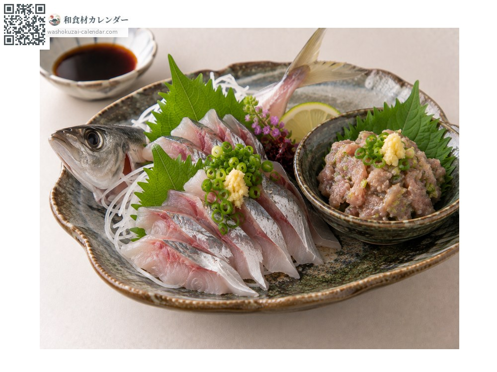
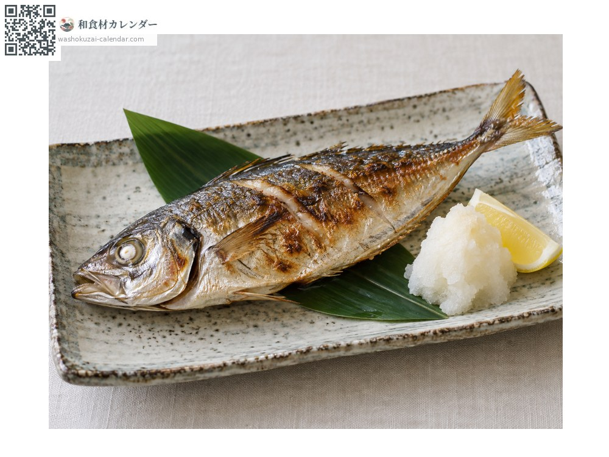
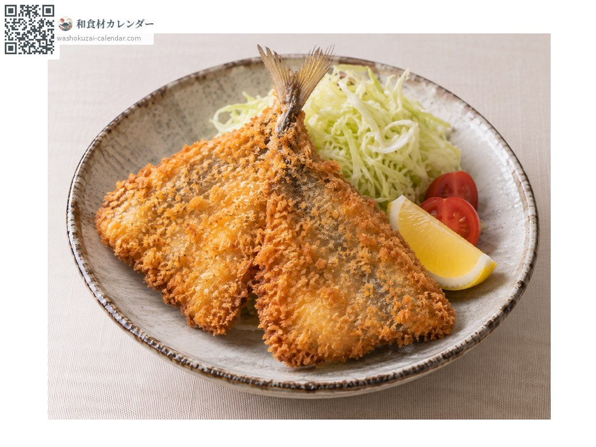
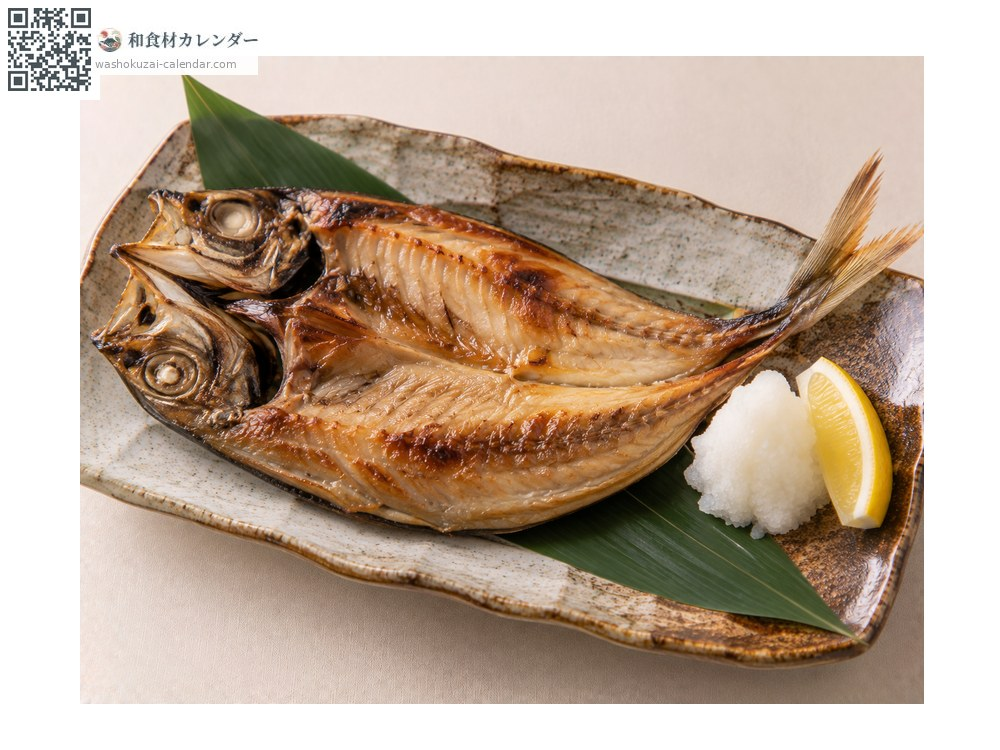

海鲜
竹筴鱼
マアジ まあじ maaji
别名maaji、aji
应季时期为5月、6月、7月

应季时期
1月
2月
3月
4月
5月
6月
7月
8月
9月
10月
11月
12月
应季有供应
烹饪方法

生鱼片与味噌剁生（なめろう）
够新鲜就生食最好。なめろう是把鱼肉与味噌、佐料一起剁碎，为房总的乡土料理。

盐烤
先撒盐静置片刻，擦干水分再烤，肉质会更紧实。

油炸与南蛮渍（炸后醋腌）
剖开油炸。南蛮渍放凉也好吃，适合提前备好。

一夜干
背部剖开后浸盐水，风干一夜，鲜味更浓。
挑选方法
眼睛清澈饱满、鱼鳃鲜红。鱼身紧实，靠近尾部的棱鳞（ぜんご）完整。
保存方法
当天吃最好。要保存就取出内脏与鱼鳃，擦干水分包上保鲜膜放冷藏。隔天起改为加热调理。
主要产地
小知识
全年都有，但产卵前的初夏油脂最丰厚。不洄游、定居于特定海域的个体称为「瀬付きアジ」，体色偏黄，被视为上品。